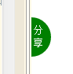
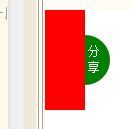
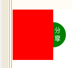
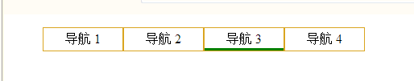

- 关于一个分享的按钮啥的移进移出
var title = document.getElementById("title");
box.onmouseover=function(){
animate(0);
}
box.onmouseout=function(){
animate(-80);
}
var time;
function animate(tPoint){
clearInterval(time);
if(box.offsetLeft>tPoint){ //这个是判断移入移出的速度和方向
speed = -10;
}else{
speed = 10;
}
time = setInterval(function(){
if(tPoint == box.offsetLeft){ // 加上判断，不然会一直跑路的哟
clearInterval(time);
}else{
box.style.left = box.offsetLeft + speed + "px"; //要是不写在这的话，每次点击按钮都会再跑路一段speed距离
//而且在动的过程中如果一直点击按钮的话，图形会越跑越快，然后根本停不下来……
}
document.title = box.style.left;//通过比较直观的方式来查看距离（改变标题咯）
},33);
}
  
- 一个类似于滤镜的效果（就是透明度的一个变化）
box.onmouseover = function(){ box.onmouseout = function(){
animate(100,40); animate(40,100);
} }
var change;
function animate(alpha,opa){
clearInterval(change);
if(alpha < opa){
speed = 2;
}else{
speed = -2;
}
change =setInterval(function(){
alpha += speed;
if(alpha == opa){
clearInterval(change);
}else{
box.style.filter = "Alpha(opacity="+alpha+")";
box.style.opacity=alpha/100; //这里是要考虑透明度的兼容问题
}
},33);
}
- 再说一个有摩擦的移动（也就是速度越来越慢然后在指定的地方停止）
btn.onclick = function(){
animate(300);
}
var time;
function animate(tPoint){
var speed;
time = setInterval(function(){
if(tPoint - box.offsetLeft > 0){
speed = Math.ceil((tPoint - box.offsetLeft)/10); //向上取整，否则到不了指定的位置，总是会差一点儿
}
else{
speed = Math.floor((tPoint - box.offsetLeft)/10); //向下取整
}
box.style.left = box.offsetLeft + speed +"px";
},33);
}
- 关于多个元素相同效果的实现（每一个都是独立的个体）
for(var i = 0 ; i < divs.length ; i++ ){
divs[i].timer = null;
divs[i].onmouseover = function(){ //使用this,使得每次运动都是一个独立的个体,不受其他相同效果元素的影响
animate(this,300);
}
divs[i].onmouseout = function(){
animate(this,100);
}
}
function animate(div,tPoint){
clearInterval(div.timer);
div.timer = setInterval(function(){
if(tPoint - div.offsetWidth <= 0){
speed = -7;
}else{
speed = 7;
}
if(Math.abs(tPoint - div.offsetWidth ) <= 7){ //要是不做这个判断的话,在靠近目标位置的时候会像猪耳朵一样抖来抖去
div.style.width = div.offsetWidth;
}else{
div.style.width = div.offsetWidth + speed + "px";
}
},33);
}
- 弹性运动，我的天，对于我这种物理差的人来说真的略尴尬
btn.onclick = function(){
animate(300);
}
function animate(tPoint){
var speed=0;
clearInterval(time);
time = setInterval(function(){
speed += (tPoint-box.offsetLeft)/10; //这里就是类似一个受到摩擦速度减小的过程
speed *=0.8;
if(tPoint==box.offsetLeft){
clearInterval(time);
box.style.left = tPoint+ "px";
}else{
box.style.left = box.offsetLeft +speed+ "px";
}
},33);
}
- 导航栏弹性事件
var li = document.getElementsByTagName("li");
var line = li[li.length-1];
for(var i =0;i< li.length;i++){
li [i]. onmouseover=function(){
animate(line,this.offsetLeft);
}
}
var time = null;
function animate(img,tPoint){
var speed = 0;
clearInterval(time);
time = setInterval(function(){
speed += (tPoint-img.offsetLeft)/2;
speed *=0.7;
if( Math.abs(speed) <0 && Math.abs(tPoint-img.offsetLeft)<0){
clearInterval(time);
img.style.left = tPoint+ "px";
}else{
img.style.left = img.offsetLeft +speed+ "px";
}
document.title=img.style.left+","+speed;
},33);
}
